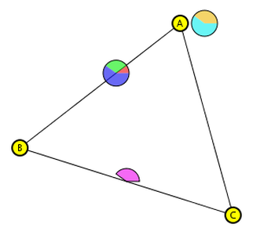
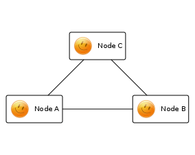
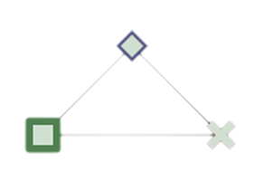
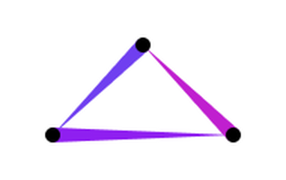

GraphStream
A Dynamic Graph Library
NetSci-X 2016 – School of Code
Sources
Codes and Presentations are on GitHub
- Code : github.com/graphstream/gs-talk
- Slides : graphstream.github.io/gs-talk

Outline
- General Presentation of GraphStream (this presentation)
- First Tutorials
- Community Structures Tutorial
Outlook
- Dynamic Graphs
- GraphStream
- The Event Model
- Algorithms
- Visualisation
- Interaction with other tools
First, static graphs
Structure:
- Nodes, Vertices
- (undirected) Edges, Links
- (directed) Arcs
First, static graphs
Algorithms: Graphs Theory
- graph colouring problems
- routing problems
- flow problems
- covering problems
- subgraphs problems
When we add dynamics…
What kind of dynamics?
- values/weight on edges or nodes?
- nodes and/or edges added/removed?
When we add dynamics…
Problem with algorithms
- As soon as it gets computed, the result has vanished.
- Can we stop the graph and recompute?
- Depends on the dynamic graph model.
Dynamic Graph Models
Many graph models consider dynamics in some ways. But they are usually bounded to their application domain.
- Is there a general-enough model that can be used in a broad range of applications?
- What about a Dynamic Graph Theory with algorithms for colouring, routing, flows, etc.?
Complex Networks
Exploration: Analysis of “real world” networks (web graphs, biological networks, social networks)
Modelling: Build artificial networks (Barabasi-Albert, Watts-Strogatz, Dorogovtsev-Mendes, Golomb , etc.)
- Measures on graphs: community, distribution, dimensions, etc.
- Iterative Construction/Iteration: we see dynamic graphs here!
Aggregative Methods
All the evolution is known in advance, the dynamic graph is aggregated into a static graph. (Temporal Networks, Evolving Graphs, Time-Varying Graphs, etc.)
Why? Because it allows the use of classical graph theory.
Re-optimisation
Build and maintain structures on dynamic graphs (e.g. spanning trees) without prior knowledge of the evolution.
Hypothesis: Updating an existing structure after some modifications is more effective that recomputing it from scratch.
GraphStream
Study interaction networks and their dynamics
- Dynamic Algorithms
- Dynamic Visualisation
A free and open-Source project supported by the University of Le Havre.
- Stefan Balev
- Antoine Dutot
- Yoann Pigné
- Guilhelm Savin
In a nutshell
A Java library with a handy public API
Graph g = new SingleGraph("MyGraph");
g.read("some-file.tlp");
g.getDegree();
g.display();Based on an event model: Nodes and Edges are Added/Removed/Modified
Interaction with over tools
- Offline: several import / export file formats
- Online: through the API or through a network connection
Architecture
Public API graphstream-project.org/doc/API
org.graphstream.graph.stream.ui.algorithm
Organised into sub-projects github.com/graphstream
gs-core,gs-algo,gs-ui,gs-netstream,gs-boids,gs-netlogo,gs-geography, …
Get GraphStream!
On the Website
- graphstream-project.org
- official releases (v1.3) of gs-core, gs-algo, gs-ui
- nightly-builds
On Github
- github.com/graphstream
- bug tracker on the
gs-coreproject
On Maven
<groupId>org.graphstream</groupId>
<artifactId>gs-core</artifactId>
<version>1.3</version>GraphStream’s Event Model
The dynamics of the graph is expressed by an event model
Events
- Addition or removal of nodes
- Addition or removal of edge
- Addition, update or removal of data attributes
- Time steps
A stream of events modifies the structure of a graph.
GraphStream’s Event Model
Sources
Produce streams of events.
Sinks
Receive streams of events.
Pipes
Both source and sink. A graph is a pipe.
Pipelining
Sources send events to sinks.
- Observer design pattern
- Publish / Subscribe
- Java Swing listeners
Sources, pipes and sinks can be connected to form pipelines.

Pipelining
Graph graph = new SingleGraph("Some Graph");
graph.display();
FileSource source = new FileSourceDGS();
source.addSink( graph );
source.begin("someFile.dgs");
while( source.nextEvents() ){
// Do whatever between two events
}
source.end();Pipelining
The stream of events can flow between sources and sinks:
- across the network,
- processes,
- threads.
For example a viewer can run in a distinct thread or machine, while a simulation on a graph runs on another.
Pipelining
Receive events from another some other process/thread/programme/machine
Graph g = new SingleGraph("RWP");
ThreadProxyPipe pipe = getPipeFromElsewhere(); //fake function
pipe.addSink(g);
g.display(false);
while (true) {
pipe.pump();
Thread.sleep(1);
}Graph components
Various graph structures
- “Single” graphs (1-graph),
- “multigraphs” (p-graphs, that are graphs where several edges can connect two nodes).
- Directed and/or undirected graphs.
Several internal representations
- fast data retrieval,
- data compactness.
Representation of a graph at a given time (static). But this representation can evolve.
Data Attributes
- Any number of data attributes can be associated with any element of the graph.
- An attribute is made of a key and a value that can be any Java Object.
- You can place attributes on nodes, edges and on the graph itself.
g.addAttribute("My attribute", aValue);
Node n = g.getNode("A");
n.setAttribute("xy", 23.4, 55.0);
Edge e = g.getEdge("AB");
e.removeAttribute("selected");
double w = e.getNumber("weight");Algorithms
Searches
random searches, shortest paths, spanning trees, etc.
Metrics
modularity, centrality, degree distributions, connectivity, density, etc.
Generators
random, regular, preferential attachment, small world, from GIS, from the web, etc.
Focus on Dynamic Connected Components
import org.graphstream.algorithm.ConnectedComponents;
//...
ConnectedComponents cc = new ConnectedComponents();
cc.init(graph);
while(something) {
cc.getConnectedComponentsCount();
canDoSomethingWithGraph();
}Focus on Dynamic Shortest Paths
import org.graphstream.algorithm
.networksimplex.DynamicOneToAllShortestPath;
//...
DynamicOneToAllShortestPath algorithm =
new DynamicOneToAllShortestPath(null);
algorithm.init(graph);
algorithm.setSource("0");
while(something) {
algorithm.compute();
canDoSomethingWithGraph();
}Algorithms
Some tutorials to go farther
Visualization
- Dynamic Visualization: the graph is evolving, so does the visualization.
- Get more information than the graph itself: sprites.

Extra visual information
CSS
graph { padding: 50px; }
node {
size-mode: fit; shape: rounded-box;
fill-color: white; stroke-mode: plain;
padding: 5px, 4px; icon-mode: at-left;
icon: url('data/Smiley_032.png');
} 
Extra visual information
CSS classes
graph.addAttribute("stylesheet",
"graph {padding : 50px;}"
+ "node {size: 100px; fill-mode: image-scaled;}"
+ "node.fun {fill-image: url('fun.gif');}"
+ "node.dull {fill-image: url('dull.png');}");
Node a = graph.addNode("A");
Node b = graph.addNode("B");
Node c = graph.addNode("C");
graph.addEdge("AB", "A", "B");
graph.addEdge("CB", "C", "B");
graph.addEdge("AC", "A", "C");
a.addAttribute("ui.class", "fun");
b.addAttribute("ui.class", "fun");
c.addAttribute("ui.class", "dull");Extra visual information
CSS classes

Extra visual information
Sprites
Graphical objects that give extra information on the application you deal with.
SpriteManager sman = new SpriteManager(graph);
Sprite pin = sman.addSprite("pin");Sprites are also customised with CSS
sprite#pin {
shape: box;
size: 32px, 52px;
fill-mode: image-scaled;
fill-image: url('mapPinSmall.png');
}Interactions with other Tools
Offline interactions
File formats
Tulip, Gephi, GML, Pajek, DOT, LGL, ncol, DGS
DGS004
"graph.dgs" 0 0
an A x:1 y:2.3 label:"Node A"
an B x:0 y:0
an C xy:2.3,1
an D xyz:1,1
ae AB A B weight:23.3
ae AC A C weight:2
st 1.0
ae BC B > C
ae BD B > D
st 1.1
dn BOnLine interactions
NetStream
- Export streams of events to other applications / machines / languages
- Both ways. From GS to other and from other to GS
- Binary network protocol
- TCP socket (and WebSocket) implementation
- Several languages (Java, C++, Python, JS)
import org.graphstream.stream.netstream.NetStreamReceiver;
//...
NetStreamReceiver net = new NetStreamReceiver(2001);
ThreadProxyPipe pipe = net.getDefaultStream();
pipe.addSink(graph);
while (true) {
pipe.blockingPump();
}NetLogo Extension
- NetLogo agents (turtles, links and observer) send graph events to external application
- The external application maintains a dynamic graph and runs algorithms on it
- It sends the computed results back to NetLogo
- Agents can receive and use them to take their decisions